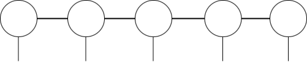
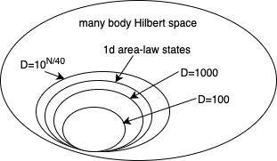
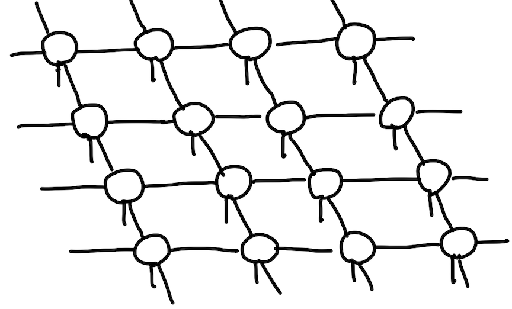
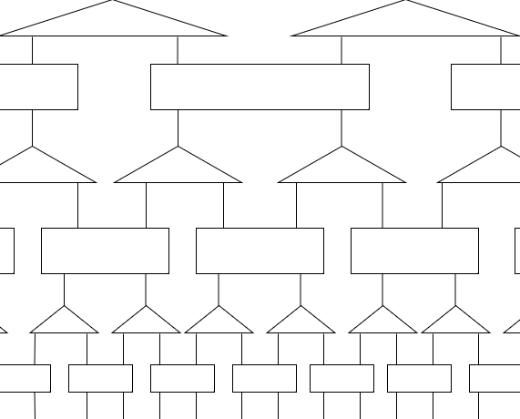
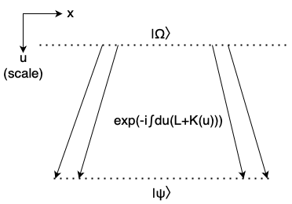

テンソルネットワークには有名な形式が複数存在します。ここではMPS(Matrix Product State), PEPS(Projected Entangled Pair State), MERA(Multi-scale Entanglement Renormalization Ansatz)という3つの形式を解説します。
目次
- MPS(Matrix Product State)
- PEPS(Projected Entangled Pair State)
- MERA(Multi Scale Entanglement Renormalization Ansatz)
MPS(Matrix Product State)
MPSの概要
MPSとはMatrix Product Stateの略であり、最も有名なテンソルネットワークの形式である。下の図のように1次元にテンソルが並んでいて、1次元の量子多体問題のシミュレーションに使われることが多い。
数式で表すと次のようになる。隣り合うテンソル同士で縮約をとっている。
$$ C_{i_1, i_2, …, i_N}=\sum_{\alpha_1, \alpha_2, …, \alpha_N}A^{i_1\alpha_1}_1A^{i_2\alpha_1\alpha_2}_2…A^{i_N\alpha_N}_N $$
私たちが多くの場合で「ギャップのある局所的ハミルトニアンの低エネルギー状態」に興味がある。このような状態はエンタングルメントエントロピー(解説)が面積則に従うことが知られている。つまりエンタングルメントエントロピーが系を分割する面積に比例する。1次元の面積則に従う状態はMPSを用いると有限のボンド次元Dで十分に近似できることが知られている。つまり膨大なヒルベルト空間全体を考える必要が無くなることが分かる。
MPSの構成(正準型・Canonical Form)
N階のテンソルからMPSを構成するには特異値分解を用いる。この形を正準型(Canonical Form)と呼ぶ。
式で表すと以下のようになる。一番左の脚をシュミット分解(解説)で切り離す。左から2番目の脚をシュミット分解で切り離す。ということを繰り返していくだけ。特異値を含む行列が間に残ることになるが左または右のテンソルとの縮約をとると消える。
$$ C_{i_1, i_2, …, i_N}=A_1\lambda_{12}B_{i_2, i_3, …, i_N} \
=A_1\lambda_{12}A_2\lambda_{23}B_{i_3, i_4, …, i_N} \
= … \
=A_1\lambda_{12}A_2\lambda_{23}…\lambda_{n-1,n}A_n $$
MPSの計算
MPS同士の内積を計算するときは左のテンソルから順に縮約をとっていけば良い。またcanonical formを用いると局所的に作用する(数個のテンソルだけに作用する)演算子の期待値の計算を簡単にできる。
$p$を空いている脚の次元とする。通常のテンソルでは$p^N$個の要素を全て計算機に格納して計算する必要がある。MPSを用いることにより、必要な箇所から3階のテンソルの部分和を順番に作っていけば良いため、計算量を大幅に抑えることができる。
PEPS(Projected Entangled Pair State)
PEPS(Projected Entangled Pair State)とは2次元に並んだテンソル列であり、2次元の格子状に並んだ量子状態のシミュレーションに用いられる。
MPSと似ている点としては、指数関数的に大きなボンド次元をとることであらゆるヒルベルト空間の量子多体状態を表現できること、小さなボンド次元でも2次元の局所的なハミルトニアンの低エネルギー状態を近似することができること、などが挙げられる。
MPSと異なる点としては、相関関数が2点の分離距離に対して多項式的に減衰する状態を表現できるという点、ボンド次元が2で十分であるという点、臨界点を記述するのに向いているという点などが挙げられる。
MERA(Multi Scale Entanglement Renormalization Ansatz)
MERAの概要
MERA(Multi Scale Entanglement Renormalization Ansatz)は下の図に示すように木構造のような形をしている。下から上に見ると、3階のテンソル(三角)は繰り込み変換、つまり自由度を絞る働きをしている。また4階のテンソル(四角)はディスエンタングラーと呼ばれ、周囲とのエンタングルが少ない基底に変換する働きをしている。基底状態を変分法で求める際に、ディスエンタングラーがないとエンタングルメントが小さすぎるため必要になる。よって一番上はエンタングルしていない状態、一番下のはエンタングルしている状態に対応している。これらのテンソルはユニタリである。
局所的に作用する演算子の期待値$\langle O \rangle= \langle\psi| O |\psi\rangle $を計算する際に関係ない部分はユニタリ性により消えるため計算が軽い。短距離の相関を切り、長距離の相関を取り込んでいるため臨界系の解析に向いていることが知られている。
cMERA(continuous MERA)
やや踏み込んだ内容だがMERAを離散的にではなく連続的なものとして考えたものをcMERAと呼ぶ。イメージを図に示す。scale方向を連続で考えている。cMERAの概念はQFTs(quantum field theories)で重要なアプローチを与える。エンタングルしていない状態$|\Omega\rangle$(IR state)にエンタングルを加えて与えられたハミルトニアンに対する基底状態$|\psi\rangle$(UV state)を作る。粗視化の段階でヒルベルト空間の次元を一定に維ためダミー状態が必要になる可能性がある。
量子状態をscale $u$を使って$|\psi(u)\rangle$と表す。$|\psi(u)\rangle$は$|\Omega\rangle$に運動量スケール$k\leqq ∧e^u$のエンタングルを加えることで得る($∧$はUVカットオフスケール)。$u=0$はエンタングルがUV stateに一致するので$|\psi(0)\rangle=|\psi\rangle$に、$u=-\infty$はエンタングルしていないので$|\psi(-\infty)\rangle=|\Omega\rangle$に対応する。また$|\psi(u)\rangle$を以下のように書くことができる。$P$はpath-orderingの演算子であり、$e^{iuL}$はMERAに一致させるための$u$方向のスケール変換である。
$$|\psi(u)\rangle=e^{-iuL}Pe^{-i\int^u_{-\infty} K(s)ds}|\Omega\rangle$$
$K(s)=\int k(x, s)dx$により$s$方向のスケール(つまり$k=∧e^s$)にエンタングルを加えている。